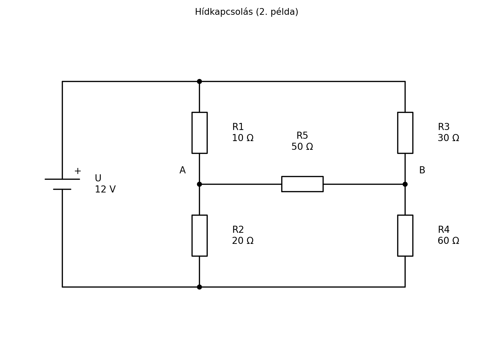
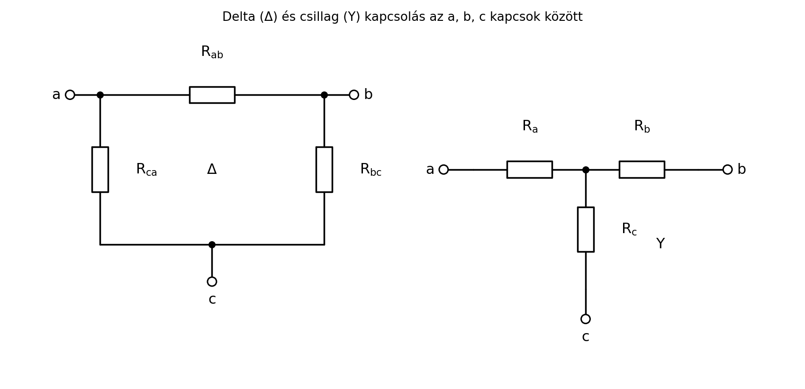
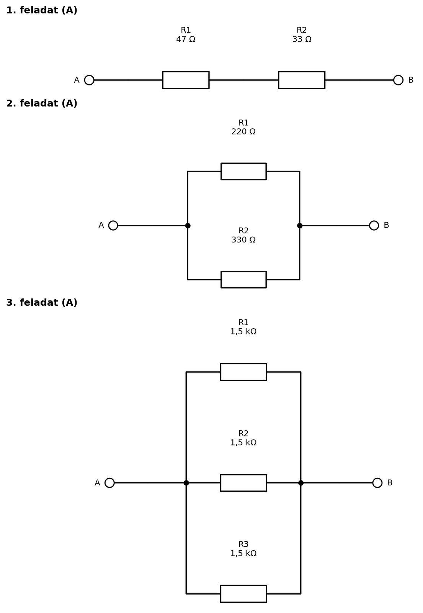
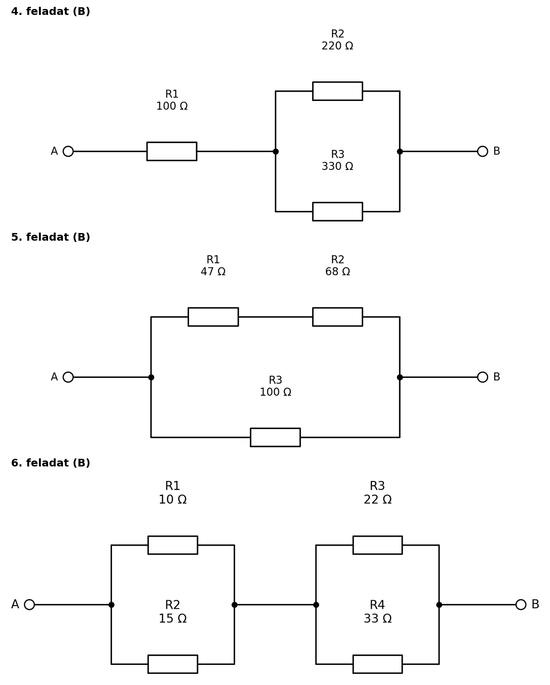
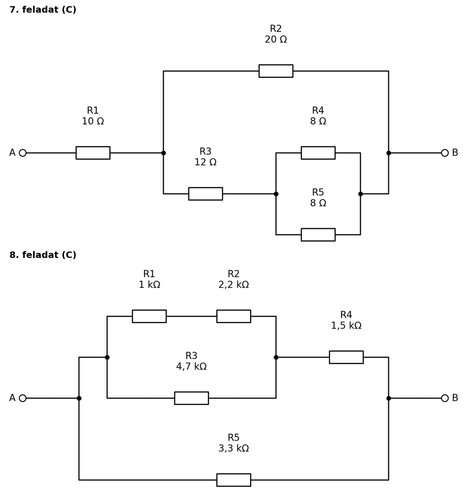
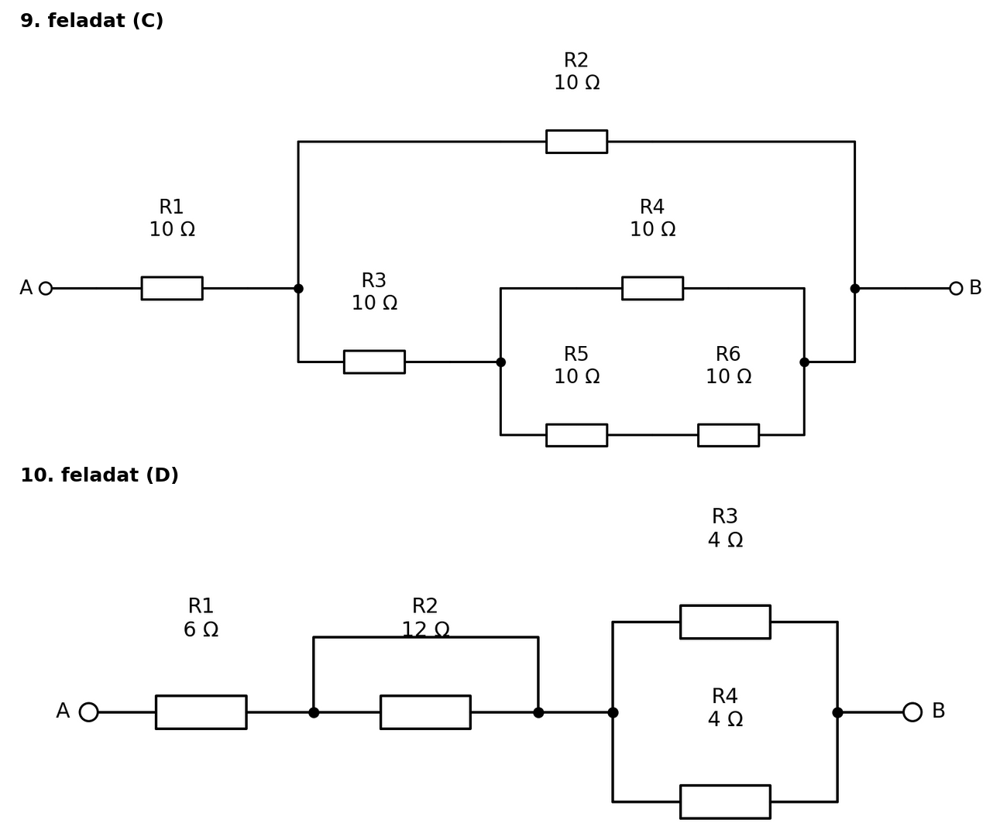

4.3.1.1 1. példa: soros és
párhuzamos csoport egyszerűsítése
A fenti kapcsolás adatai:
,
,
,
.
Megoldás:
Felismerjük, hogy
és
párhuzamos:
Az eredő ellenállás:
A teljes áram:
Az
feszültsége:
A párhuzamos csoport feszültsége:
Ugyanezt kapjuk a csoport eredőjéből is:
.
Az egyes ágak áramai:
Ellenőrzés: a párhuzamos csomópontban a befolyó és elfolyó áramok
összege egyenlő:
A kerekítésből adódó eltérés elfogadható. ∎
4.3.1.2 2. példa: kiegyenlített
hídkapcsolás
A hídkapcsolás négy ellenállásból és egy hídágból áll: az
–
az egyik, az
–
a másik soros ág, a két ág közös tápfeszültségen van, és az
hídág a két ág középpontját (A és B) köti össze. Sokszor a rajz
szimmetrikusnak tűnik, de a hídágat csak akkor hagyhatjuk el, ha a híd
kiegyenlített.

Hídkapcsolás (2. példa) - Bal ág: R1
felül, R2 alul, középpontja A; jobb ág: R3 felül, R4 alul, középpontja
B; az R5 hídág az A és B pont között. U = 12 V.
A híd akkor kiegyenlített, ha az A és a B pont potenciálja egyenlő,
mert ekkor az
két végén nincs feszültség, így áram sem folyik rajta. Az
és az
feszültsége a két ág feszültségosztójából:
Az
egyenlőségből
,
azaz
,
amiből a kiegyenlítettség feltétele:
Ekkor a hídágban
()
nem folyik áram, ezért elhagyható, és a kapcsolás két párhuzamos ággá
rendeződik.
Adott:
,
,
,
,
,
.
Ellenőrzés:
tehát a híd kiegyenlített.
A két ág eredője:
A teljes eredő:
A teljes áram:
Az ágáramok:
és a hídág árama
.
∎
Ha a híd nem kiegyenlített, a hídágat nem szabad elhagyni. Ilyenkor a
hálózat már nem egyszerűsíthető tisztán soros-párhuzamos csoportokká;
két út marad: a következő példa csillag–delta
átalakítása, vagy a Kirchhoff-törvények és hálózatszámítás
(tankönyv, 4.4) alfejezetben bemutatott általános módszer.
4.3.1.3 3. példa: kiegyenlítetlen
híd – csillag–delta átalakítással
Három ellenállás kétféleképpen kapcsolódhat három kapocs (a, b, c)
közé: háromszögbe (delta, Δ), vagy egy közös pontból
kiindulva csillagba (Y).

Delta (Δ) és csillag (Y) kapcsolás az a,
b, c kapcsok között - Balra a delta (R_ab, R_bc, R_ca), jobbra a csillag
(R_a, R_b, R_c). Ha a képletek szerint választjuk az értékeket, a két
kapcsolás kívülről nézve egyenértékű.
Összefüggés (Δ → Y). Egy csillagág ellenállása a
kapocshoz csatlakozó két deltaoldal szorzata osztva a három oldal
összegével:
Összefüggés (Y → Δ).
Egyenlő elemekre
.
A képletek abból a feltételből következnek, hogy a két kapcsolás bármely
két kapocs között ugyanazt az eredőt adja; például az a–b párra
.
Három ilyen egyenletből a három ismeretlen kifejezhető. Az
összefüggés a háromfázisú ohmos terheléseknél (csillagban és deltában
kapcsolt fűtőbetétek) is hasznos, lásd Csillag és delta kapcsolás
(tankönyv, 7.2).
Számítás. A 2. példa hídja, de
(kiegyenlítetlen):
,
,
,
,
,
.
A felső háromszög –
(felső csomópont–A),
(felső csomópont–B),
(A–B) – csillaggá alakítható; az oldalak összege
:
Itt
a felső csomópontból a csillag középpontjába,
és
a középpontból az A, illetve a B pontba vezet. A hálózat most már
soros–párhuzamos:
Visszabontás. A középpont potenciálja az alsó sínhez
képest
;
ebből
és
.
A hídág árama az eredeti kapcsolásban
,
A-ból B felé. Ellenőrzés: a Kirchhoff-törvények és hálózatszámítás
(tankönyv, 4.4) generátorának 5. rögzített feladata ugyanezt a hidat a
csomóponti potenciálok módszerével oldja meg, azonos eredménnyel. ∎
Megjegyzés. A kiegyenlített híd elve a
Wheatstone-hidas ellenállásmérés alapja: az ismeretlen ellenállást addig
hasonlítjuk össze ismertekkel, amíg a hídágban nem folyik áram (lásd
Mérés alapjai, mérési hibák és műszerosztályok (tankönyv, 8.1)).
A fenti kalkulátor egyetlen rögzített kapcsolást játszik le; a vegyes
kapcsolás egyszerűsítése (csomópont-felismerés, összevonás,
visszabontás) viszont csak sok, egyre nehezedő feladaton válik
készséggé. Az alábbi generátor minden „Új feladat”-ra más
topológiát rajzol: A – 2–3 ellenállás,
egyetlen soros vagy párhuzamos művelet (n azonos ellenállás párhuzamosan
is); B – 4–5 ellenállás, két szint; C
– 6–8 ellenállás, három szint vagy létrahálózat, a kapcsokon adott
feszültséggel, és kérdés egy kijelölt elem áramára, feszültségére vagy
teljesítményére; D – csapdás hálózat: rövidzáró
vezetékkel áthidalt elem, egyik végén lógó elem vagy kiegyenlített híd.
A lap ±1 %-os tűréssel ellenőriz, felismeri a tipikus hibákat (a
párhuzamos eredőt átlagként számolni, minden elemet sorosnak vagy
párhuzamosnak venni, a szorzat/összeg képletet három ellenállásra
alkalmazni, a rövidzárt vagy lógó elemet beszámítani), a lépésenkénti
megoldásban pedig minden összevonás előtt kiemeli a soron következő
csoportot, és az addigi összevonásokat egyetlen ellenállásként rajzolja
újra; a C szinten a visszabontás és a teljesítmény-mérleg is
megjelenik.
A nyomtatott kiadásban az alábbi tíz rögzített feladat helyettesíti a
generátort; a hálózatok rajza a következő ábrákon látható (az
ellenállások számozása a feladatsorral egyezik). Előbb jelöld be a
csomópontokat, és csak azután vonj össze.

Az eredő-ellenállás feladatsor hálózatai (1–3.
feladat)

Az eredő-ellenállás feladatsor hálózatai (4–6.
feladat)

Az eredő-ellenállás feladatsor hálózatai (7–8.
feladat)

Az eredő-ellenállás feladatsor hálózatai (9–10.
feladat)
Rögzített feladatsor. A HTML-kiadás generátora
végtelen sok hasonló feladatot ad négy szinten; az alábbi tíz feladat
rögzített, a hálózatok rajza a feladatsor előtti ábrán (1–10), a
megoldókulcs a sor végén található. A C szintű feladatoknál az eredő
mellett a teljes áram és a kérdezett elem árama, illetve teljesítménye
is szerepel.
(A) Mekkora az ábrán látható 2 ellenállásból álló
hálózat eredő ellenállása az A–B kapcsok között?
(A) Mekkora az ábrán látható 2 ellenállásból álló
hálózat eredő ellenállása az A–B kapcsok között?
(A) 3 egyforma, 1,5 kΩ-os ellenállás párhuzamosan
kapcsolódik. Mekkora az eredő ellenállás az A–B kapcsok között?
(B) Mekkora az ábrán látható 3 ellenállásból álló
hálózat eredő ellenállása az A–B kapcsok között?
(B) Mekkora az ábrán látható 3 ellenállásból álló
hálózat eredő ellenállása az A–B kapcsok között?
(B) Mekkora az ábrán látható 4 ellenállásból álló
hálózat eredő ellenállása az A–B kapcsok között?
(C) Az ábra 5 ellenállásból álló hálózatát az A–B
kapcsokon U = 24 V táplálja. Mekkora az eredő ellenállás, a teljes áram,
és mekkora az R2 ellenállás áramát?
(C) Az ábra 5 ellenállásból álló hálózatát az A–B
kapcsokon U = 12 V táplálja. Mekkora az eredő ellenállás, a teljes áram,
és mekkora az R4 ellenállás teljesítményét?
(C) Az ábra 6 ellenállásból álló hálózatát az A–B
kapcsokon U = 24 V táplálja. Mekkora az eredő ellenállás, a teljes áram,
és mekkora az R6 ellenállás áramát?
(D) Az ábrán R1 = 6 Ω, R2 =
12 Ω (kivezetései között egy vezeték fut), R3 = 4 Ω és
R4 = 4 Ω párhuzamosan. Mekkora az eredő ellenállás az A–B
kapcsok között?
Megoldókulcs.
A rögzített feladatsor megoldókulcsa
Feladat
Szint
Eredmény
1.
A
Re = 80 Ω
2.
A
Re = 132 Ω
3.
A
Re = 500 Ω
4.
B
Re = 232 Ω
5.
B
Re = 53,49 Ω
6.
B
Re = 19,2 Ω
7.
C
Re = 18,89 Ω; I = 1,27 A; I2 = 565 mA
8.
C
Re = 1,676 kΩ; I = 7,16 mA; P4 = 18,6 mW
9.
C
Re = 16,25 Ω; I = 1,48 A; I6 = 185 mA
10.
D
Re = 8 Ω
Kidolgozott megoldások.
Soros csoport: R12 = R1 + R2 = 47 Ω
+ 33 Ω = 80 Ω.
Az eredő: Re = 80 Ω (ellenőrzés: párhuzamos csoport eredője
mindig kisebb a legkisebb ágánál, soros csoporté nagyobb a legnagyobb
tagjánál).
Párhuzamos csoport: R12 = R1 · R2 /
(R1 + R2) = 220 Ω · 330 Ω / (220 Ω + 330 Ω) = 132
Ω.
Az eredő: Re = 132 Ω (ellenőrzés: párhuzamos csoport eredője
mindig kisebb a legkisebb ágánál, soros csoporté nagyobb a legnagyobb
tagjánál).
3 egyforma ellenállás párhuzamosan: R123 = R / n = 1,5 kΩ
/ 3 = 500 Ω.
Az eredő: Re = 500 Ω (ellenőrzés: párhuzamos csoport eredője
mindig kisebb a legkisebb ágánál, soros csoporté nagyobb a legnagyobb
tagjánál).
Párhuzamos csoport: R23 = R2 · R3 /
(R2 + R3) = 220 Ω · 330 Ω / (220 Ω + 330 Ω) = 132
Ω.
Soros csoport: R123 = R1 + R23 = 100 Ω
+ 132 Ω = 232 Ω.
Az eredő: Re = 232 Ω (ellenőrzés: párhuzamos csoport eredője
mindig kisebb a legkisebb ágánál, soros csoporté nagyobb a legnagyobb
tagjánál).
Soros csoport: R12 = R1 + R2 = 47 Ω
+ 68 Ω = 115 Ω.
Párhuzamos csoport: R123 = R12 · R3 /
(R12 + R3) = 115 Ω · 100 Ω / (115 Ω + 100 Ω) =
53,49 Ω.
Az eredő: Re = 53,49 Ω (ellenőrzés: párhuzamos csoport
eredője mindig kisebb a legkisebb ágánál, soros csoporté nagyobb a
legnagyobb tagjánál).
Párhuzamos csoport: R12 = R1 · R2 /
(R1 + R2) = 10 Ω · 15 Ω / (10 Ω + 15 Ω) = 6
Ω.
Párhuzamos csoport: R34 = R3 · R4 /
(R3 + R4) = 22 Ω · 33 Ω / (22 Ω + 33 Ω) = 13,2
Ω.
Soros csoport: R1234 = R12 + R34 = 6 Ω
+ 13,2 Ω = 19,2 Ω.
Az eredő: Re = 19,2 Ω (ellenőrzés: párhuzamos csoport eredője
mindig kisebb a legkisebb ágánál, soros csoporté nagyobb a legnagyobb
tagjánál).
Párhuzamos csoport: R45 = R4 · R5 /
(R4 + R5) = 8 Ω · 8 Ω / (8 Ω + 8 Ω) = 4 Ω.
Soros csoport: R345 = R3 + R45 = 12 Ω +
4 Ω = 16 Ω.
Párhuzamos csoport: R2345 = R2 · R345 /
(R2 + R345) = 20 Ω · 16 Ω / (20 Ω + 16 Ω) = 8,889
Ω.
Soros csoport: R12345 = R1 + R2345 = 10
Ω + 8,889 Ω = 18,89 Ω.
Teljes áram: I = U / Re = 24 V / 18,89 Ω = 1,271 A.
R12345 soros csoport: az áram minden tagján ugyanaz, 1,271 A;
így R2345 árama is 1,271 A.
R2345 párhuzamos csoport: U = I · R = 1,271 A · 8,889 Ω =
11,29 V; a(z) R2 ágban I = U / R = 11,29 V / 20 Ω = 564,7
mA.
R2 = 20 Ω: I2 = 564,7 mA, U2 = I · R =
11,29 V, P2 = I2 · R = 6,378 W.
Teljesítmény-mérleg: a forrás P = U · I = 24 V · 1,271 A = 30,49 W; az
ellenállásokon Σ I2 · R = 30,49 W ✓
Soros csoport: R12 = R1 + R2 = 1 kΩ
+ 2,2 kΩ = 3,2 kΩ.
Párhuzamos csoport: R123 = R12 · R3 /
(R12 + R3) = 3,2 kΩ · 4,7 kΩ / (3,2 kΩ + 4,7 kΩ) =
1,904 kΩ.
Soros csoport: R1234 = R123 + R4 =
1,904 kΩ + 1,5 kΩ = 3,404 kΩ.
Párhuzamos csoport: R12345 = R1234 · R5
/ (R1234 + R5) = 3,404 kΩ · 3,3 kΩ / (3,404 kΩ +
3,3 kΩ) = 1,676 kΩ.
Teljes áram: I = U / Re = 12 V / 1,676 kΩ = 7,162 mA.
R12345 párhuzamos csoport: U = I · R = 7,162 mA · 1,676 kΩ =
12 V; a(z) R1234 ágban I = U / R = 12 V / 3,404 kΩ = 3,525
mA.
R1234 soros csoport: az áram minden tagján ugyanaz, 3,525 mA;
így R4 árama is 3,525 mA.
R4 = 1,5 kΩ: I4 = 3,525 mA, U4 = I · R
= 5,288 V, P4 = I2 · R = 18,64 mW.
Teljesítmény-mérleg: a forrás P = U · I = 12 V · 7,162 mA = 85,94 mW; az
ellenállásokon Σ I2 · R = 85,94 mW ✓
Soros csoport: R56 = R5 + R6 = 10 Ω
+ 10 Ω = 20 Ω.
Párhuzamos csoport: R456 = R4 · R56 /
(R4 + R56) = 10 Ω · 20 Ω / (10 Ω + 20 Ω) = 6,667
Ω.
Soros csoport: R3456 = R3 + R456 = 10 Ω
+ 6,667 Ω = 16,67 Ω.
Párhuzamos csoport: R23456 = R2 · R3456
/ (R2 + R3456) = 10 Ω · 16,67 Ω / (10 Ω + 16,67 Ω)
= 6,25 Ω.
Soros csoport: R123456 = R1 + R23456 =
10 Ω + 6,25 Ω = 16,25 Ω.
Teljes áram: I = U / Re = 24 V / 16,25 Ω = 1,477 A.
R123456 soros csoport: az áram minden tagján ugyanaz, 1,477
A; így R23456 árama is 1,477 A.
R23456 párhuzamos csoport: U = I · R = 1,477 A · 6,25 Ω =
9,231 V; a(z) R3456 ágban I = U / R = 9,231 V / 16,67 Ω =
553,8 mA.
R3456 soros csoport: az áram minden tagján ugyanaz, 553,8 mA;
így R456 árama is 553,8 mA.
R456 párhuzamos csoport: U = I · R = 553,8 mA · 6,667 Ω =
3,692 V; a(z) R56 ágban I = U / R = 3,692 V / 20 Ω = 184,6
mA.
R56 soros csoport: az áram minden tagján ugyanaz, 184,6 mA;
így R6 árama is 184,6 mA.
R6 = 10 Ω: I6 = 184,6 mA, U6 = I · R =
1,846 V, P6 = I2 · R = 340,8 mW.
Teljesítmény-mérleg: a forrás P = U · I = 24 V · 1,477 A = 35,45 W; az
ellenállásokon Σ I2 · R = 35,45 W ✓
R2 (12 Ω) két kivezetését ellenállás nélküli vezeték köti
össze: a két pont ugyanaz a csomópont, U2 = 0, I2
= 0 – R2 kimarad.
R34 = R3 · R4 / (R3 +
R4) = 4 Ω · 4 Ω / (4 Ω + 4 Ω) = 2 Ω.
Re = R1 + 0 + R34 = 6 Ω + 2 Ω = 8
Ω.
4.3.3 Önellenőrzés
Igaz vagy hamis? Két ellenállás akkor párhuzamos, ha a kapcsolási
rajzon egymás mellett láthatók.
Számítsd ki két
-os
ellenállás párhuzamos eredőjét!
Az 1. példában
(,
,
,
)
mekkora az
-n
eső feszültség?
Milyen feltétel esetén hagyható el a hídkapcsolás
hídága?
Miért használunk teljesítmény-mérleget az ellenőrzéshez?
4.3.4 Feladatok
1. feladat (A). Adott
,
,
,
,
ahol
és
párhuzamos,
pedig velük soros. Határozd meg az eredő ellenállást, a teljes áramot és
a két párhuzamos ág áramát!
2. feladat (A). Adott
,
,
párhuzamos, és
soros a párhuzamos csoporttal. Számítsd ki az eredő ellenállást, a
párhuzamos csoport feszültségét, valamint az
és
áramát!
3. feladat (B). Három párhuzamos ágat tartalmazó
hálózat: az első ágban
;
a második ágban
soros kapcsolásban
-mal;
a harmadik ágban
.
A tápfeszültség
.
Határozd meg az egyes ágak áramát, és ellenőrizd a
teljesítmény-mérleget!
4. feladat (B). Adott egy hídkapcsolás:
,
,
,
,
,
.
Igazold, hogy a híd kiegyenlített, határozd meg az eredő ellenállást és
a hídág áramát!
5. feladat (C). Egy tanuló az alábbi módon
számította ki az eredőt egy vegyes kapcsolásra:
,
párhuzamos, majd
soros, végül
párhuzamos az egész soros résszel. Azt írta:
,
,
végül 12,5 Ω és 20 Ω párhuzamos eredőjére
-ot
kapott. Hol a hiba? Mennyi a helyes érték?
6. feladat (D). Egy karbantartó megméri egy
fűtőpanel eredő ellenállását a sorkapcsokon:
.
A panel három azonos, egyenként
névleges ellenállású fűtőbetétet tartalmaz. Hogyan vannak bekötve a
betétek? Indokold a mérés alapján!
7. feladat (B). Rajzold át a fenti ábra (a) részén
látható hálózatot áttekinthető soros–párhuzamos alakra, és add meg az
eredőt az A és a C kapocs között, ha
,
,
!
8. feladat (B). A fenti ábra (d) részén
,
utána egy
-os
ellenállás, amelynek két kivezetését egy vezeték köti össze, majd két
-os
ellenállás párhuzamosan. Mekkora az eredő az A és B kapocs között?
Mekkora a
-os
ellenállás árama, ha a kapcsokra
jut?
9. feladat (B). Három
-os
ellenállás deltába van kötve. Mekkorák az egyenértékű csillag
ágellenállásai?
10. feladat (C). A 4. feladat hídjában
értéke
(a többi változatlan). Határozd meg csillag–delta átalakítással az eredő
ellenállást, a teljes áramot és a hídág áramát!
11. feladat (C). Az aljzatlánc példájában az 1.
aljzat átmenő kapcsában laza kötés keletkezik, amely
-mal
növeli az első szakasz ellenállását. Mekkora lesz a három aljzat
feszültsége (közelítő módszerrel), és mekkora hő keletkezik a
kötésben?
4.3.5 Megoldások
4.3.5.1 Önellenőrzés –
válaszok
Hamis. A párhuzamos kapcsolat feltétele a két közös csomópont:
mindkét ellenállás mindkét kivezetése ugyanahhoz a két csomóponthoz
kapcsolódik.
.
Az
feszültsége megegyezik a párhuzamos csoport feszültségével, tehát
.
A hídág akkor hagyható el, ha a híd kiegyenlített:
.
A teljesítmény-mérleg azt ellenőrzi, hogy a forrás által leadott
hatásos teljesítmény megegyezik az ellenállásokon disszipált
teljesítmények összegével. Ha eltérés van, akkor valahol számolási hibát
követtünk el.
4.3.5.2 1. feladat megoldása
Párhuzamos eredő:
Teljes eredő:
Teljes áram:
A párhuzamos csoport feszültsége:
Ágáramok:
Ellenőrzés:
.
4.3.5.3 2. feladat megoldása
Párhuzamos eredő:
Teljes eredő:
Teljes áram:
A párhuzamos csoport feszültsége:
Ágáramok:
Ellenőrzés:
.
4.3.5.4 3. feladat megoldása
Az ágak eredői:
A három párhuzamos ág eredője:
Teljes áram:
Ágáramok:
Ellenőrzés:
.
Teljesítmény-mérleg:
A forrás:
.
Fogyasztók:
Összeg:
.
A kerekítési eltérés elfogadható.
4.3.5.5 4. feladat megoldása
Ellenőrizzük a kiegyenlítettséget:
tehát a híd kiegyenlített.
Az ágak:
Eredő:
Teljes áram:
Ágáramok:
A hídág árama:
.
4.3.5.6 5. feladat megoldása
A hiba a párhuzamos eredő kiszámításában van: a tanuló átlagot
számolt
módon, pedig a helyes párhuzamos eredő:
Ezután a soros rész:
Végül
párhuzamosan kapcsolódik ehhez:
A tanuló által kapott
tehát hibás.
4.3.5.7 6. feladat megoldása
Három azonos
-os
ellenállás lehetséges kapcsolásai:
Mind soros:
Kettő soros, a harmadik párhuzamos a soros kettővel:
Kettő párhuzamos, a harmadik soros velük:
Mindhárom párhuzamos:
A mért
érték a mindhárom párhuzamos kapcsolásnak felel meg leginkább; a
kismértékű eltérés a névleges ellenállás tűréséből, a mérővezeték
ellenállásából és a hőmérsékletből adódhat.
4.3.5.8 7. feladat megoldása
Csomópontok: A az
bal vége; B az
jobb vége, amelyhez vezeték köti
és
felső végét; C az
és
alsó vége és a C kapocs.
és
mindkét kivezetése a B–C csomópontpáron van, tehát párhuzamosak;
az A–B között soros velük:
4.3.5.9 8. feladat megoldása
A
-os
ellenállás két kivezetése ugyanaz a csomópont (rövidzáró vezeték köti
össze), ezért feszültsége és árama
,
az eredőből kimarad:
mellett
;
ez a teljes áram a rövidzáró vezetéken folyik, a
-os
ellenálláson
.
Tipikus hiba a
beszámítása
(
lenne).
4.3.5.10 9. feladat megoldása
mindhárom ágban.
4.3.5.11 10. feladat megoldása
A felső háromszög
(,
,
):
,
,
,
.
A két ág:
és
;
,
.
A középpont potenciálja
;
,
;
,
A-ból B felé.
4.3.5.12 11. feladat megoldása
Az első szakasz ellenállása
.
Közelítően
,
így
,
,
(a pontos létramegoldás: 224,9 / 224,4 / 224,2 V). Mindhárom fogyasztó
feszültsége kb. 3 V-tal csökken. A kötésben (a pontos megoldás
áramával)
hő keletkezik egy kis kapocsban – tűzveszélyes, azonnal javítandó
(feszültségmentesen, jogosult személy által).
4.3.6 Definíciók és egyszerűsítési
stratégia – példák és gyakorlók
Kidolgozott példa (C szint): háromszintű
létrahálózat. Egy
-os
forrásra létrahálózat kapcsolódik, minden elem
:
soros
,
keresztág
,
soros
,
keresztág
,
a végén soros
és lezáró
.
Határozzuk meg az eredőt, az ágáramokat és a teljesítmény-mérleget!